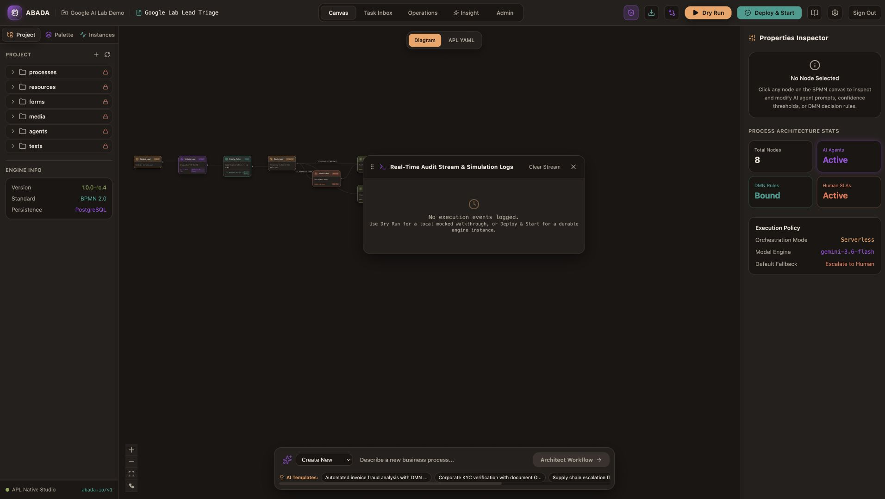
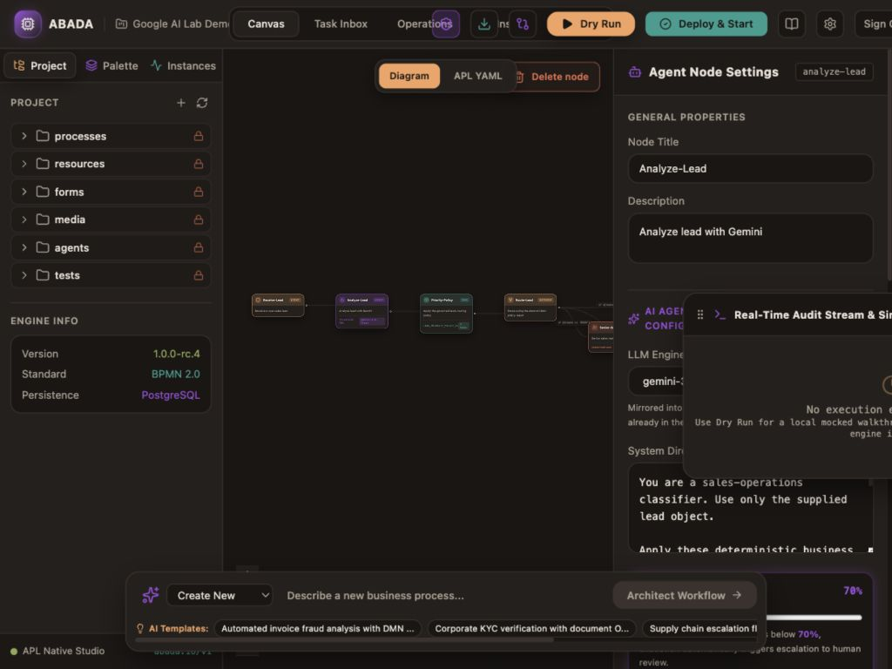
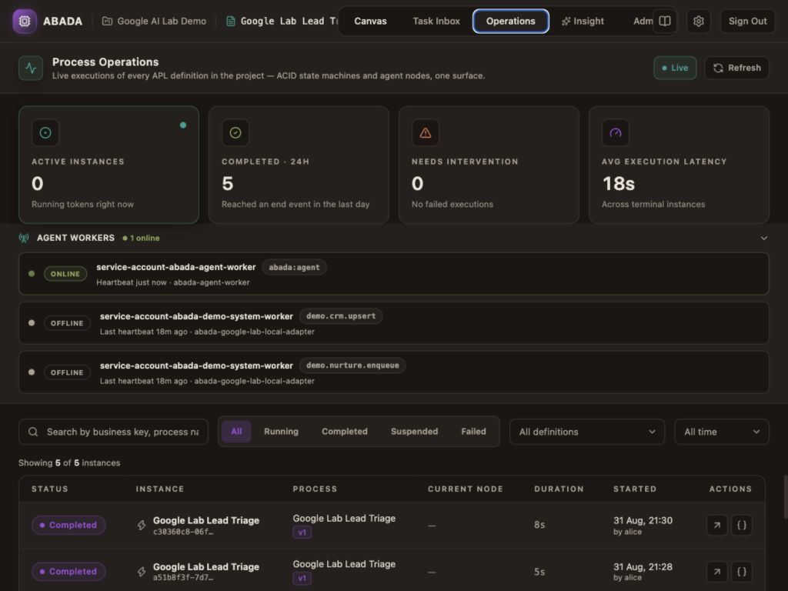
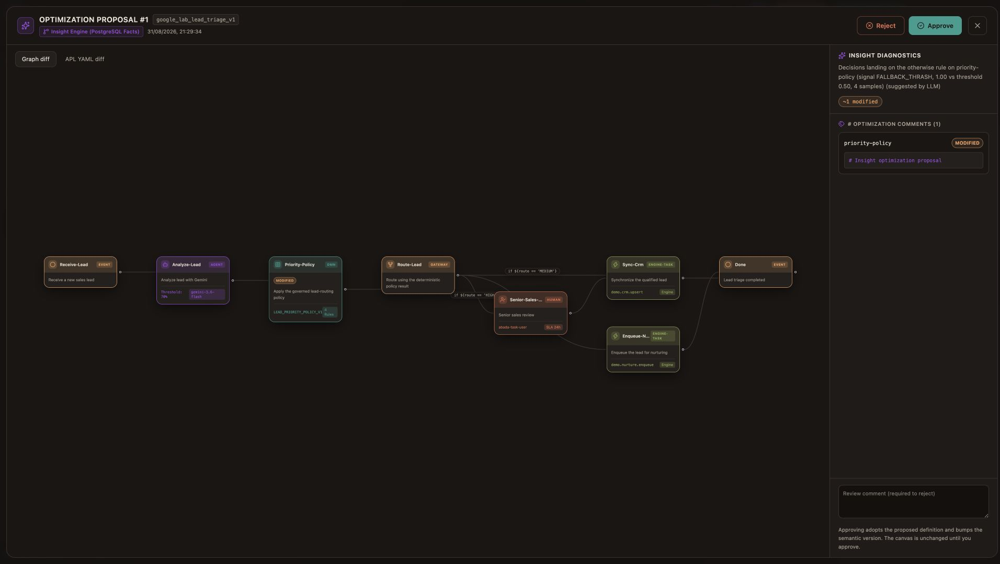

Create or import
Design visually, author with AI, use reviewable native source, or import the documented BPMN subset.
StudioCreate AI-powered business processes from scratch, run agents, people and systems on durable infrastructure, then turn execution evidence into governed improvements.
Importing supported BPMN is one entry path — not the product story.

Abada connects design, execution, operations and controlled evolution instead of leaving teams to assemble separate tools.
Design visually, author with AI, use reviewable native source, or import the documented BPMN subset.
StudioCoordinate Gemini agents, deterministic decisions, human tasks, events and external systems.
EngineInspect persisted results, confidence, attempts, latency, history, incidents and human work.
OperationsConvert bounded execution signals into validated proposals that authorized people approve or reject.
InsightThe model call is not hidden behind an opaque automation. Its prompt, selected inputs, output contract, confidence threshold and recovery policy are part of the versioned process.

Operators can see what ran, what the agent returned, where the process routed, and whether a person or system completed the next step.

Insight detects bounded operational signals, asks the LLM for a candidate improvement, validates the proposed source, and presents a diff for human review.

A real Lead Triage process: create, run with Gemini, inspect persisted results, complete human work, and review an Insight proposal.
The production contract stays database-authoritative. Agents consume the same durable work model as other external participants.
Remote model calls stay outside workflow-state transactions. Results return through authenticated worker contracts and advance state atomically.
Durable leases, retry metadata, idempotent commands and transactional outbox delivery support restart recovery and at-least-once side effects.
Run the platform, operational state and model configuration on infrastructure you control — on-premises or in your cloud.
Modernization is one adoption path. Abada is equally designed for processes created directly in Studio.
Use the visual designer, assisted authoring or reviewable abada.io/v1 source. Add agents, human forms, decisions, events and system work as first-class nodes.
Execute, import, convert and export the documented BPMN subset. Unsupported execution semantics fail explicitly instead of being accepted ambiguously.
Docker is required. The verified installer opens an auto-layouted Lead Triage Starter with Gemini, HIGH review by Bob, and local CRM/nurturing adapters — not an empty canvas.
curl -fsSL https://install.abadaplatform.com/install.sh | bash